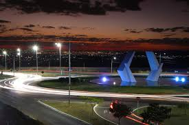

Documentário dos alunos
Assista ao material produzido pela turma sobre desigualdade social.

▶
Senador Canedo | Conhecimento e Sustentabilidade
A desigualdade social acontece quando parte da população tem muito mais acesso a renda, moradia, saúde, educação, segurança e oportunidades do que outra. Isso afeta a qualidade de vida, limita sonhos e mantém ciclos de exclusão que passam de geração para geração.
Pensar sobre esse tema é importante porque ele está presente no cotidiano: no bairro, na escola, no trabalho e nas chances que cada pessoa recebe ao longo da vida.
Assista ao material produzido pela turma sobre desigualdade social.

Confira a entrevista com um professor que aprofunda o tema de forma crítica e didática.